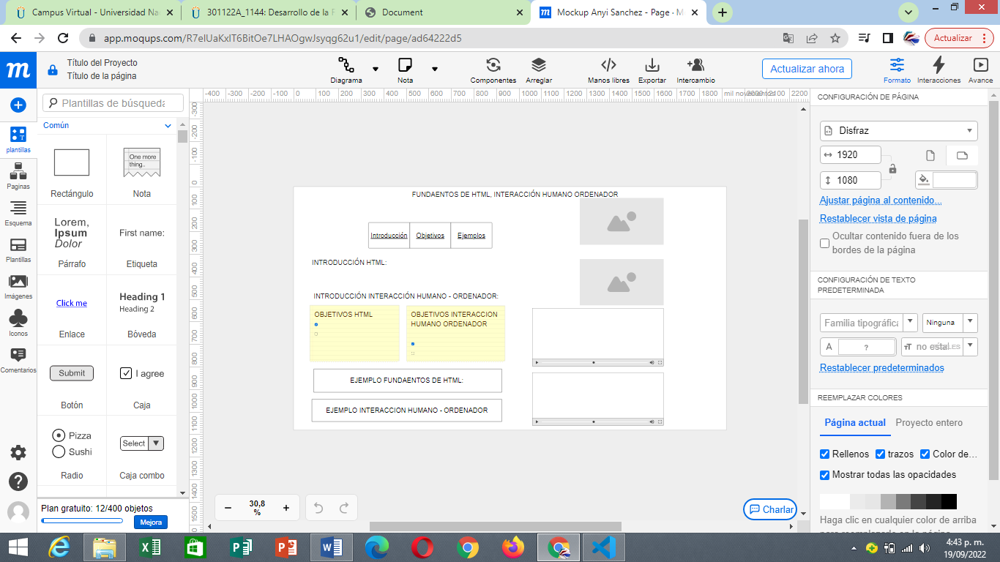

FUNDAMENTOS DE HTML
Los elementos HTML son los bloques de construcción de una página web. Una etiqueta indica al navegador dónde
empieza y termina un elemento, mientras que un atributo describe las características de un elemento

INTERACCION HUMANO - ORDENADOR
La disciplina que estudia cómo las personas interactúan con las computadoras y hasta qué punto las computadoras
se desarrollan para interactuar con las personas se llama Interacción Humano-Computadora. HCI consta de tres
componentes: los usuarios, los ordenadores y la interacción entre ellos.
